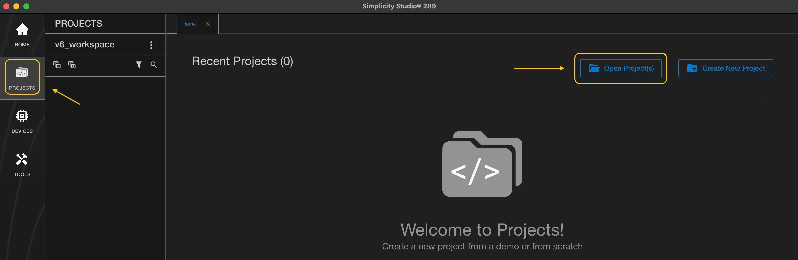
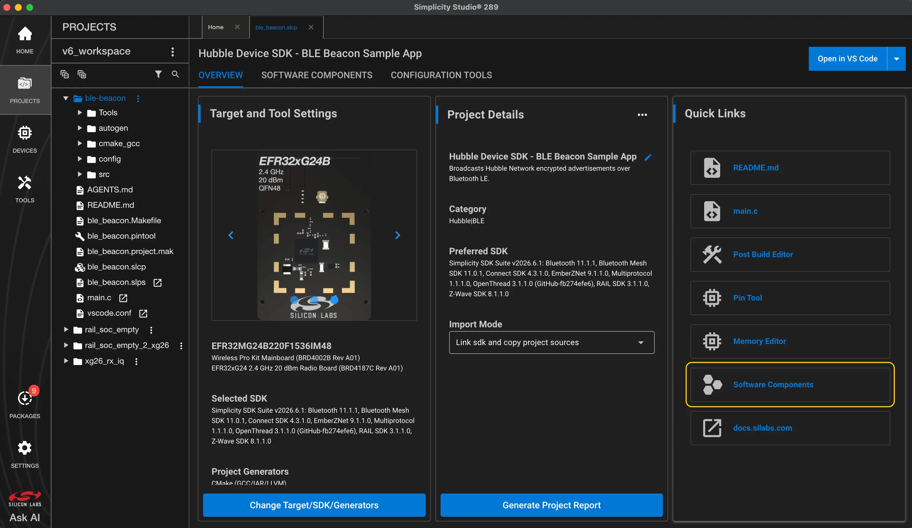
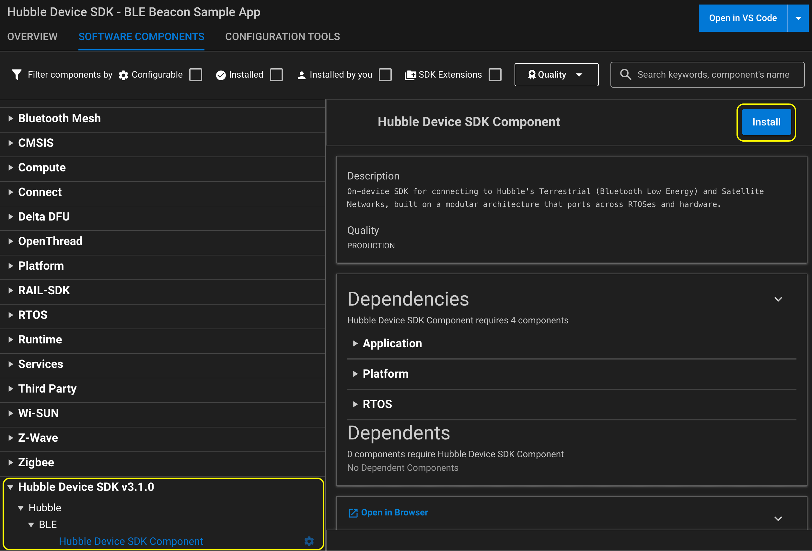
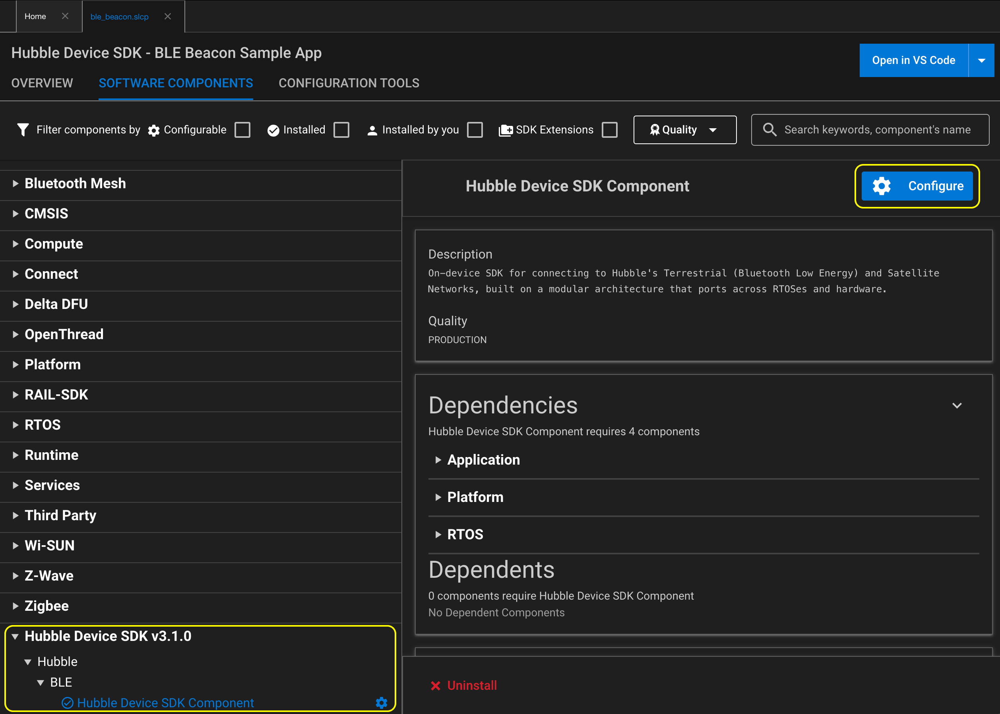

SiLabs Simplicity SDK
This guide explains how to integrate the Hubble Device SDK into a
Simplicity SDK
(SiSDK) project. The SDK ships as a Simplicity SDK extension
(hubble-network.hubble-device-sdk). Projects add it through their
.slcp file, and the SLC tooling pulls in the SDK sources, include paths,
and configuration.
Note
Only the Hubble Terrestrial (BLE) Network is currently supported on Simplicity SDK FreeRTOS.
Prerequisites
Simplicity Studio 6 with the Simplicity SDK installed.
The
slc-clitool, which is still needed to install the extension (see Installing the Extension).
Simplicity SDK,
slc-cli, the Arm GNU toolchain (gcc-arm-none-eabi), and
Simplicity Commander (commander), installed with the
Silicon Labs Tool (SLT).
A Silicon Labs board with Bluetooth® Low Energy support.
The Hubble Device SDK cloned or added as a submodule.
Device
key(generated when you register a new device to your organization through the Hubble Cloud API).
Set the following environment variables before continuing, e.g.:
export SISDK=/path/to/simplicity_sdk
export SLC=/path/to/slc_cli/slc
export COMMANDER=/path/to/commander
export HUBBLE_SDK=/path/to/hubble-device-sdk
Tip
See Useful paths for where Simplicity Studio and SLT install these tools.
Installing the Extension
SLC discovers extensions under the Simplicity SDK’s extension directory.
Link the Hubble Device SDK there and register both the SDK and the extension
as trusted:
mkdir -p $SISDK/extension
ln -s $HUBBLE_SDK $SISDK/extension/hubble-device-sdk
$SLC configuration --sdk $SISDK
$SLC signature trust --sdk $SISDK
$SLC signature trust -extpath $SISDK/extension/hubble-device-sdk
Adding Hubble Network to a Project
Open your project’s
.slcpfile to launch the Project Configurator.
Go to Software Components and search for Hubble.

Select Hubble Device SDK Component (under Hubble → BLE) and click Install.

Declare the extension in your project’s .slcp file and add the
Hubble component:
sdk_extension:
# change '3.1.0' to the version of the Hubble Device SDK you installed
- id: hubble-device-sdk
vendor: hubble-network
version: 3.1.0
component:
- id: hubble-device-sdk-component
from: hubble-device-sdk
Configuration
The SDK is configured through hubble_config.h. See
$HUBBLE_SDK/port/sisdk/hubble_config.h for the available options and
their defaults.
In the Project Configurator, open Software Components, select Hubble Device SDK Component, and click Configure.

Set the options you want to change in your project’s .slcp file,
e.g. to provide your own sequence counter:
configuration:
- name: SISDK_HUBBLE_NETWORK_SEQUENCE_NONCE_CUSTOM
value: "1"
Building and Running Your First Application
The following steps build and flash the ble-beacon sample. Replace
brd4187c with your target board.
Embed the device key and the current time into the sample sources:
cd $HUBBLE_SDK/samples/freertos/silabs/ble-beacon
$HUBBLE_SDK/tools/embed_key_time.py -b master.key -o src/
Generate a Simplicity Studio project:
$SLC generate -tlcn gcc -np -p ble_beacon.slcp \
-d /path/to/workspace/ble-beacon --with brd4187c
Then in Simplicity Studio go to PROJECTS → Open Project(s),
select the generated ble-beacon directory, and build and flash as
usual.
Build the application:
$SLC generate -tlcn gcc -o makefile -cp -p ble_beacon.slcp \
-d generated_sample_app --with brd4187c
cd generated_sample_app
make -f ble_beacon.Makefile
Flash the application:
$COMMANDER flash build/debug/ble_beacon.s37
See the sample’s README.md for key formats and troubleshooting.